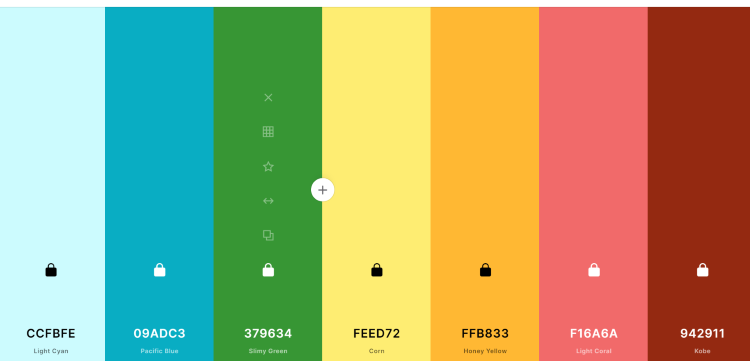

Color Scheme
I really liked the idea of using a rainbow palette for the colors for this website, partly because we experience all these different colors in nature and partly to bring a fun and happy atmosphere to the website as well. I plan to use the different colors for backgrounds for images, articles, and buttons, while keeping white and black for all text. The pale yellow will be the background color.